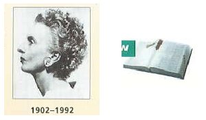
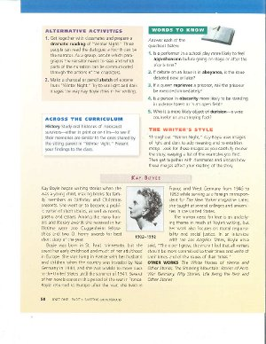

These images are taken from a high school literature textbook. The full page where they appear can be seen below.

View a larger version of this image.
Many images don't need to be made accessible if their function in the text is purely decorative or if they convey information that is also provided in the text.
The first image, a graphic of an open book, is an icon used to highlight a recurring section at the end of each chapter. It is a decorative image and does not need to be made accessible. However, it should be tagged so that a screen reader will know to skip it.
The code used for this in an EPUB 3 file is:
<img src="image.jpg" alt="" role="presentation" />
In a DAISY file, the code used is:
<img src="image.jpg" alt="" />
The second image is an author photo that accompanies a short biography of the author. There are two options for making this image accessible. The appropriate option depends on the accessibility of the text associated with the image.
If the dates below the photo are live text and will be read by a screen reader, the accompanying photo can be identified with a short alt text of: "Photo of Kay Boyle." All other information is included in the caption and the box text.
In both DAISY and EPUB 3, the following code can be used:
<img src="kayboyle.jpg" alt="Photo of Kay Boyle" />
If the dates below the photo are embedded in the image and will therefore not be read by a screen reader, the photo should be identified with a short alt text of: "Photo of Kay Boyle, who lived from 1902 to 1992."
In both DAISY and EPUB 3, the following code can be used:
<img src="kayboyle.jpg" alt="Photo of Kay Boyle, who lived from 1902 to 1992" />